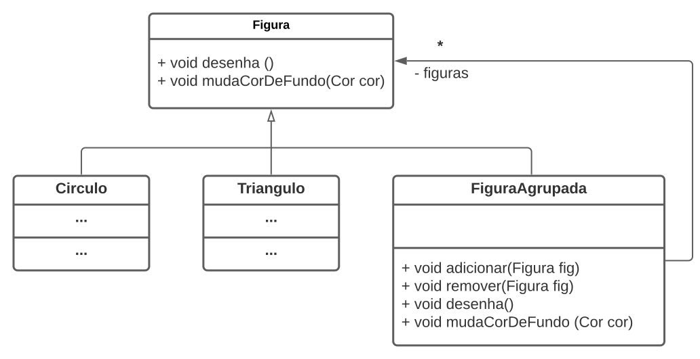

Compre na Amazon, Submarino ou Mercado Livre.
Engenharia de Software Moderna
Criando Objetos Compostos com o Padrão de Projeto Composite
Introdução
Neste artigo, vamos apresentar o padrão de projeto Composite, que – por ser um padrão bem simples – não foi tratado no Capítulo 6 do livro.
Para isso, vamos usar a mesma estrutura dos padrões de projeto que estudamos no referido capítulo. Ou seja, iremos apresentar o padrão descrevendo primeiro um contexto, depois um problema enfrentado nesse contexto e, por fim, a solução que é proposta por Composite.
Contexto
Suponha que estamos desenvolvendo um editor gráfico, similar ao Paint (para Windows) ou Canva (Web). Nesse editor, temos interfaces e classes como as seguintes:
interface Figura {
void desenha();
void mudaCorDeFundo(Cor cor);
}
class Circulo implements Figura {
...
}
class Triangulo implements Figura {
...
}Problema
No nosso editor, queremos implementar uma funcionalidade que permita agrupar figuras e então tratar a figura resultante desse agrupamento como uma figura única.
Por exemplo, uma figura agrupada pode ser composta por um círculo e dois triângulos (veja ilustração). Criado esse agrupamento, queremos, em seguida, realizar uma operação no mesmo – por exemplo, mudar a cor de fundo de suas três figuras – usando para isso uma única chamada de método.

Explicando melhor, um código cliente vai poder trabalhar com figuras
simples ou com figuras agrupadas da mesma forma, usando apenas a
interface Figura. Esse código não vai precisar saber qual
tipo de figura (simples ou agrupada) ele está manipulando.
Solução
O padrão de projeto Composite é a solução para o problema que enunciamos. Ele permite armazenar objetos compostos (ou agrupados) em uma estrutura com forma de árvore e então possibilita que clientes manipulem esses objetos como se fossem objetos simples.
A classe principal do padrão é aquela responsável pelo agrupamento. No nosso exemplo, temos então que criar uma classe como a seguinte:
class FiguraAgrupada implements Figura {
private ArrayList<Figura> figuras = new ArrayList<Figura>();
// lista que vai armazenar as figuras agrupadas
public void adicionar(Figura fig) {
figuras.add(fig);
}
public void remover(Figura fig) {
figuras.remove(fig);
}
public void desenha() {
for (Figura fig: figuras) {
fig.desenha();
}
}
public void mudaCorDeFundo(Cor cor) {
for (Figura fig: figuras) {
fig.mudaCorDeFundo(cor);
}
}
}Dois aspectos principais devem ser ressaltados sobre a classe
FiguraAgrupada:
Ela implementa métodos para adicionar e remover uma figura do agrupamento.
Ela também é uma figura, pois implementa a interface
Figura. A implementação dos métodos deFiguraapenas delega a mesma operação para todas as figuras do agrupamento, usando para isso um comandofor.
Veja também um diagrama UML com as classes que criamos até agora:

Como resultado, para um código cliente, não interessa se ele está trabalhando com um figura simples ou com uma figura agrupada, como no seguinte caso:
class Cliente {
void foo(Figura fig) {
...
fig.desenha(); // desenha figura simples ou agrupada
...
}
}
class Main {
public main() {
Cliente cliente = new Cliente();
Circulo c1 = new Circulo();
cliente.foo(c1); // chama foo com figura simples
Triangulo t1 = new Triangulo();
Triangulo t2 = new Triangulo();
FiguraAgrupada grupo = new FiguraAgrupada();
grupo.adicionar(c1);
grupo.adicionar(t1);
grupo.adicionar(t2);
cliente.foo(grupo); // chama foo com figura agrupada
}
}Por fim, veja que podemos criar uma hierarquia, em forma de árvore,
com figuras agrupadas contendo
outras figuras agrupadas, como
em:
FiguraAgrupada grupo2 = new FiguraAgrupada();
grupo2.adicionar(grupo1); // figura agrupada contendo outra figura agrupadaComentário Final
Devemos usar o padrão Composite quando precisamos representar de forma uniforme objetos simples e objetos compostos (isto é, objetos formados pelo agrupamento de objetos simples). Isso simplifica a implementação de código que precisa manipular tais objetos, pois fica transparente se a manipulação ocorre sobre um objeto simples ou sobre um objeto composto.
Código fonte: O código fonte do exemplo usado neste artigo está disponível aqui.
Exercício
Existem três tipos de classes ou interfaces no padrão Composite:
- Uma interface visível para o cliente (no nosso exemplo,
Figura) - Classes de objetos simples (no nosso exemplo,
CirculoeTriangulo) - Classe responsável pela composição (no nosso exemplo,
FiguraAgrupada)
Considerando essas classes, pense em um outro exemplo de uso do padrão Composite. E então responda:
- Qual é a interface visível para o cliente? Quais métodos ela define?
- Quais são as classes de objetos simples? Basta citar o nome delas.
- Qual a classe responsável pela composição? Basta citar o nome dela.
- Uma interface visível para o cliente (no nosso exemplo,
Voltar para a lista de artigos.